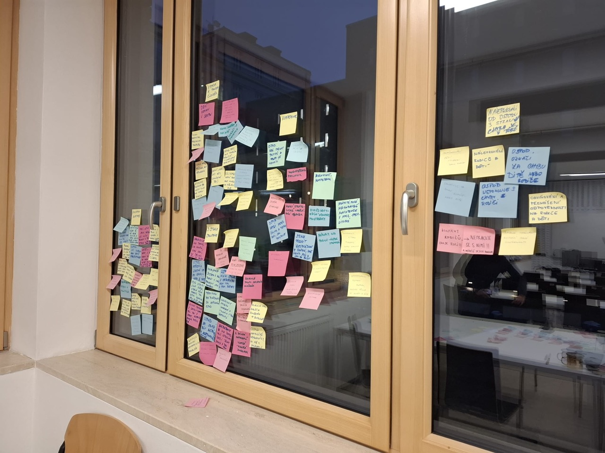
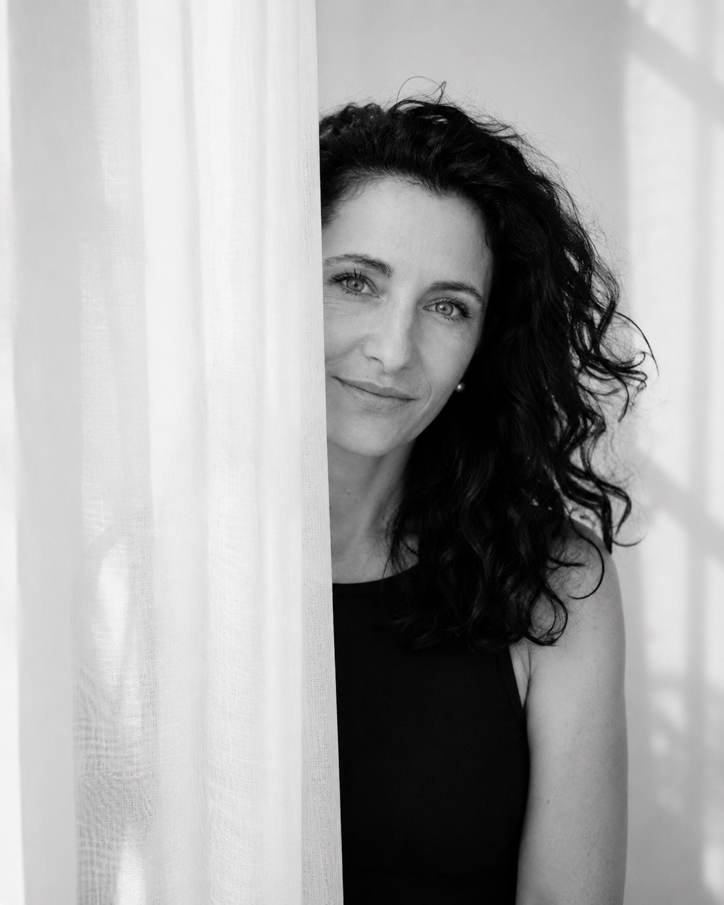
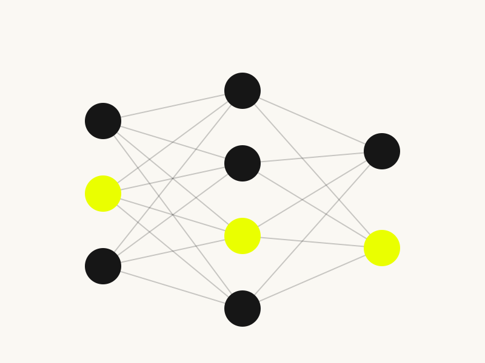
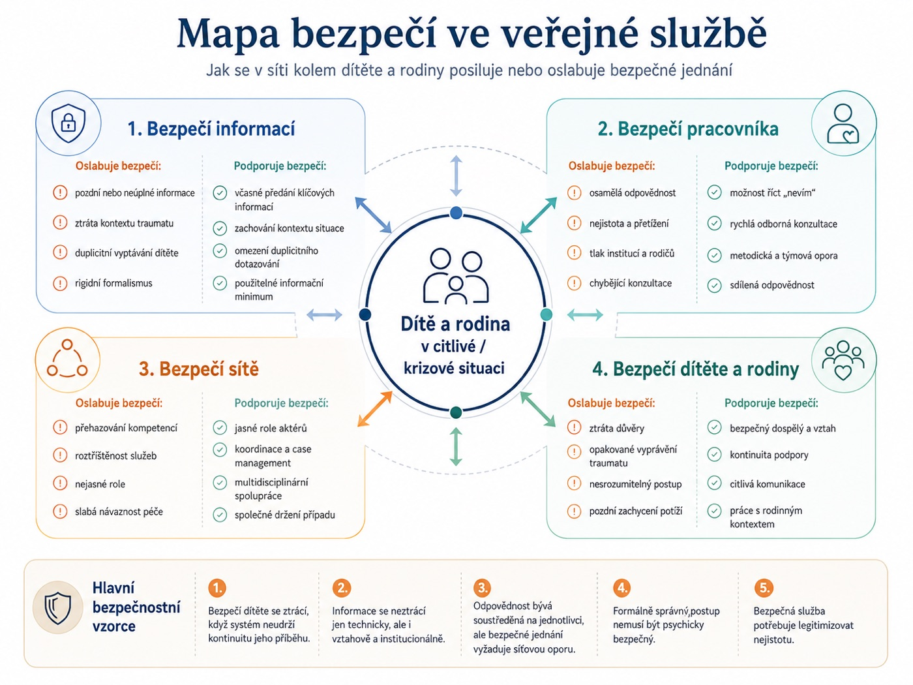
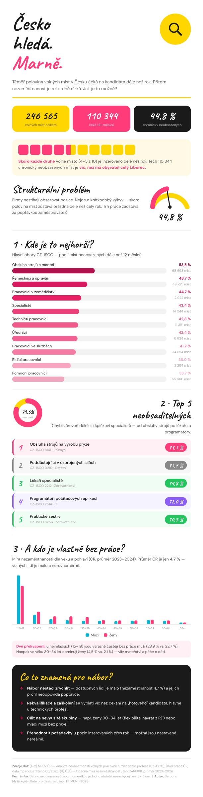
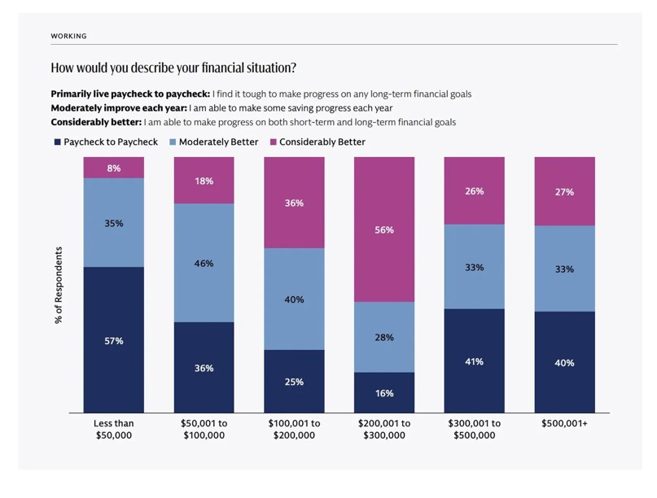
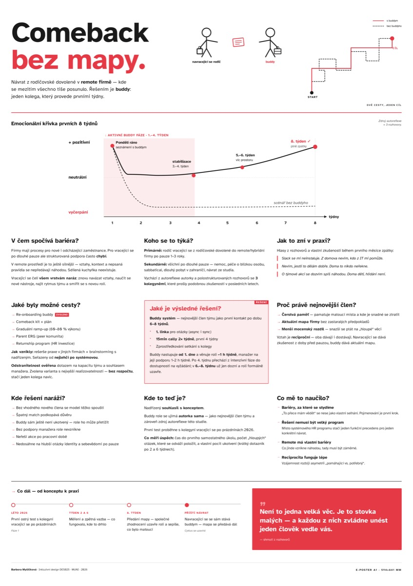
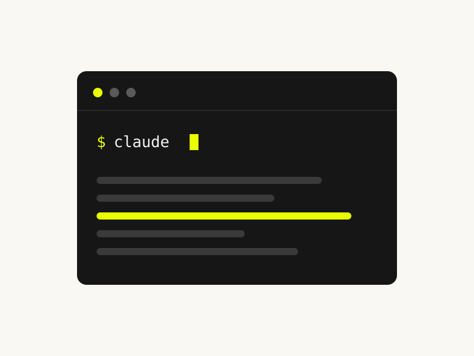
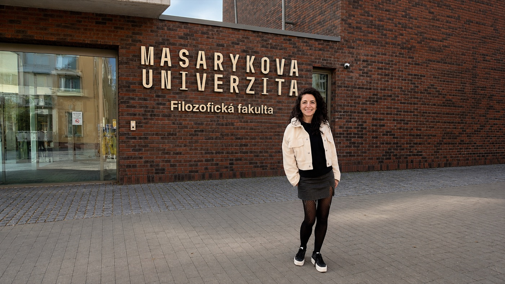
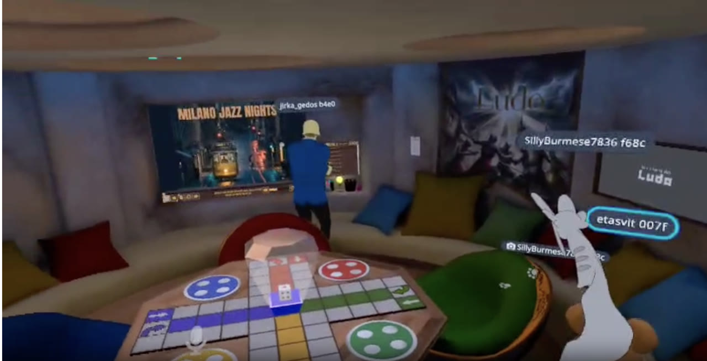

OSPOD: psychologické bezpečí a práce s chybami
Dvoudenní hackathon (Praxe I) o tom, jak udělat rozhodování v krizích jistější, transparentnější a v nejlepším zájmu dítěte. V sedmičlenném týmu jsme navrhli proces systémové změny.
Více →
Nejvíc mě zajímá, co se děje pod povrchem. Proč lidé dělají to, co dělají, co potřebují a jak by věci kolem nich mohly sloužit líp. Tahle zvědavost je nitka, která se táhne vším, co dělám.
Profesně se pohybuju v salesu a produktovém prostředí, vystudovala jsem sociologii a teď studuju Design informačních služeb na KISKu. Všechny tyhle obory mají mnoho společného. V centru je vždycky člověk a jeho potřeby. Multidisciplinarita pro mě není buzzword, ale způsob práce.
Důležitý moment přišel na rodičovské, kterou jsem vzala jako vzácnou příležitost se na chvíli zastavit a ujasnit si, do čeho chci dál investovat svůj čas. Utvrdilo mě to v tom, že chci spojovat to, co umím z byznysu, s tím, co mě táhne k designu.
A k designu mě táhne hlavně jeho proces. Od chvíle, kdy odhalíte, co nefunguje, až po okamžik, kdy se to promění v řešení, které někomu pomůže. Nejradši mám výzkum, ve kterém se ty skutečné problémy teprve vynořují.
Spolu s dalšími studentkami KISKu jsem spoluzaložila spolek Jiná mysl, z. s., kde řešíme témata, na kterých nám záleží. Patří mezi ně třeba návrat dětí po dlouhodobé nemoci do běžného života nebo systémové změny veřejných služeb.
Tahle stránka je záznam mojí cesty, zachycuje projekty, učení i hledání vlastního směru.
Design thinking is a human-centered approach to innovation that integrates the needs of people, the possibilities of technology, and the requirements for business success.
Design thinking jako přístup, který propojuje potřeby lidí, možnosti technologií a potřeby byznysu.
Výběr projektů, které vznikají během mého studia na KISK MUNI, od prvního semestru dál.

Dvoudenní hackathon (Praxe I) o tom, jak udělat rozhodování v krizích jistější, transparentnější a v nejlepším zájmu dítěte. V sedmičlenném týmu jsme navrhli proces systémové změny.
Více →Případová studie multižánrového divadelního zážitku, který přes vzdušnou akrobacii, tanec a hudbu normalizuje téma menstruačního cyklu. Zkoumám designový proces i jeho společenský dopad.
Více ↗Rozhovor s Jakubem Karlecem (2FRESH) o tom, jak se za 25 let proměnil digitální design, s jakými výzvami se potýkají junioři a jak práci mění AI. Publikováno na Mediu.
Více ↗
Mezinárodní online kurz (University of Helsinki & MinnaLearn). Úvod do umělé inteligence: co AI je a není, jak funguje strojové učení a jaké má reálné i etické dopady. Zakončeno certifikátem.
Více →
Týmový kvalitativní výzkum (5 studentek, 15 hloubkových rozhovorů) o bezpečném rozhodování o dětech v síti OSPOD. Spoluvedla jsem rozhovory, tagovala v Condensu a podílela se na syntéze. Výstupem je mapa bezpečí, čtyři vrstvy bezpečí, integrační matice a designová výzva.
Více →
Datová infografika o tom, proč v Česku zůstávají statisíce volných míst neobsazené navzdory rekordně nízké nezaměstnanosti. Mapuje strukturální nesoulad nabídky a poptávky a pět nejhůř obsaditelných profesí.
Více →
Semestrální deník reflektovaných zápisků o grafech a vizualizacích, na které jsem narazila, od příspěvku na X přes interaktivní storytelling The Pudding až po slide z konference.
Více ↗
Návrat z rodičovské do remote firmy, kde se mezitím všechno tiše posunulo. Z autoreflexe a tří rozhovorů jsem navrhla řešení „buddy“. Výstupem je e-poster s emoční křivkou prvních 8 týdnů a konceptem k otestování.
Více →
Reflexe Studijního semináře II, kde jsem se učila vibecoding v Claude Code. Praktickým projektem se stalo přímo tohle portfolio, od první nejistoty v terminálu po samostatnou práci a přesah do praxe.
Více →
Ohlédnutí za prvním rokem Designu informačních služeb, jak do sebe začaly zapadat sociologie, byznys a design, co přinesla virtuální realita i hackathon a proč začínám být blíž k vlastnímu směru.
Více →
V předmětu Virtuální realita jsme se spolužačkou připravily a odtutorovaly vlastní lekci ve VRChatu. Reflexe o tom, jak moc je VR o lidech, i o soukromí a hranicích ve virtuálních prostorech.
Zajímá tě moje práce, studijní projekty nebo možná spolupráce v oblasti výzkumu, service designu či HR témat? Napiš mi.
ahoj@barboramysickova.cz